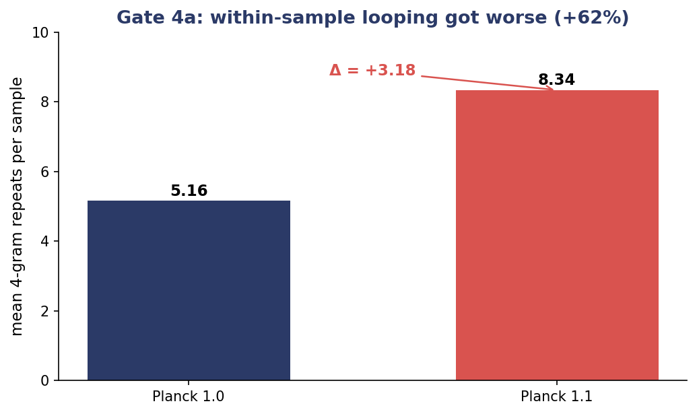
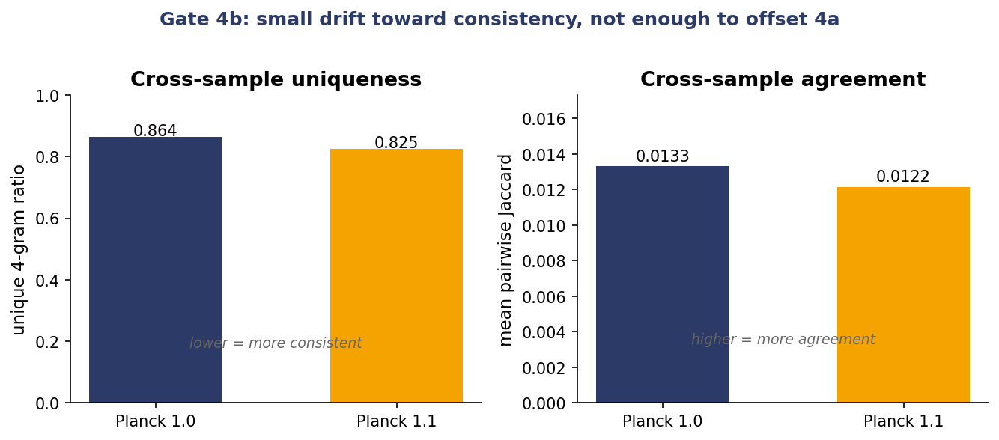
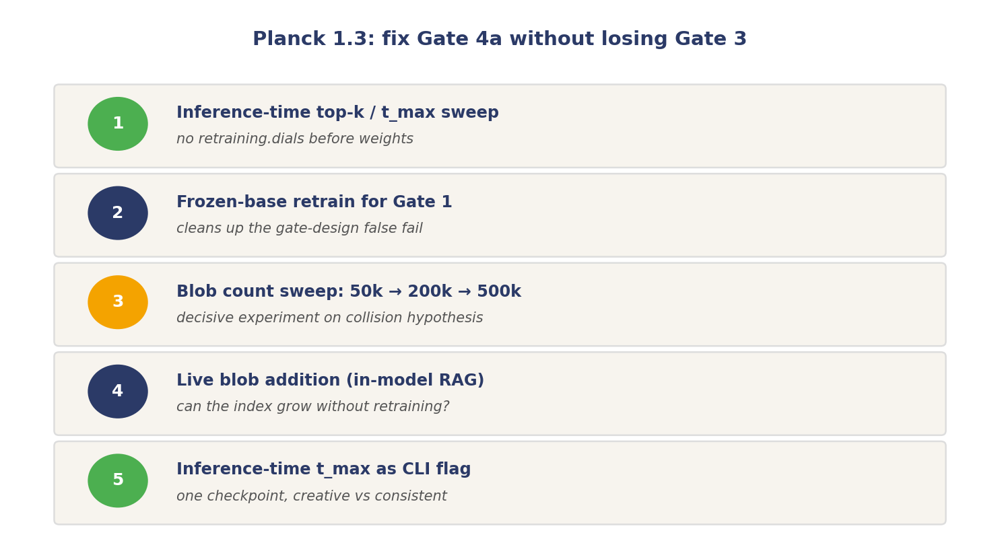

Gate results and the Planck 1.3 plan
Continuing the SGS series.
Rerun numbers on the split Gate 4.
Gate 4a, intra-sample repetition. Mean repeated 4-grams per sample: Planck 1.0 = 5.16, Planck 1.1 = 8.34. Delta +3.18, a 62 percent relative increase. Pass condition was 1.1 less-than-or-equal to 1.0. Fail.
Gate 4b, cross-sample diversity. Unique-4-gram ratio 0.864 to 0.825. Mean pairwise Jaccard 0.0133 to 0.0122. Both move toward consistency, which is the direction we wanted for factual and code output, but by 4 to 9 percent. An order of magnitude smaller than the Gate 4a regression it would have to offset.
Net read. The mechanism works. Blobs lower likelihood measurably and the learned gate is using them at inference. In this configuration the retrieval pathway also pulls generations into loops inside a single sample more than it pulls different samples of the same prompt into agreement. The property we wanted shows up weakly; the property we did not want shows up strongly.
Decision. H-SGS does not enter Hertz 1.2 in this configuration. Hertz 1.2 ships on the acceleration recipe already planned, without blobs. The blob track moves to Planck 1.3.
Planck 1.3 plan, five items ordered by cost.
- Top-k and transmittance-cap sweep on the existing checkpoint. No retraining. Tells us cheaply whether Gate 4a can be dialled out at decode.
- Frozen-base retrain for Gate 1. Isolates the blob head so the ablation is diagnostic. Cheap and independent.
- Blob count sweep, 50k to 200k to 500k. Primary hypothesis for the Gate 4a failure is blob collision: a small store forces similar contexts onto the same top-k and the retrieval pathway pulls decoding toward a narrow attractor set. More blobs spread that pull. This is the decisive experiment.
- Live blob addition. Freeze the model, append blobs built from a held-out slice, check whether new prompts route to new blobs and whether Gate 3 improves on the held-out slice without retraining. The architectural test of the built-in RAG framing.
- Inference-time transmittance dial as a CLI flag. One checkpoint, two modes: high cap for factual and code, low cap for creative.
Per-domain blob shards move to Hertz 2.x. The idea needs a larger model and a more diverse corpus than TinyStories to be testable.
The headline from Planck 1.1 stands. Retrieval is real and useful for likelihood. Whether it can be made safe for generation at the same time is the Planck 1.3 question. That is the condition for blobs rejoining the Hertz track.


